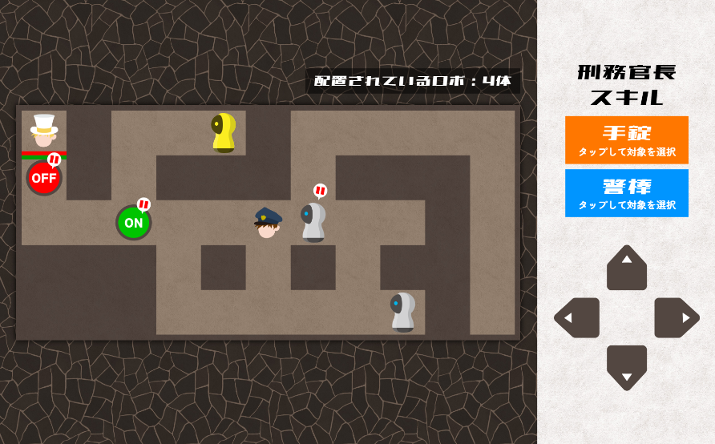
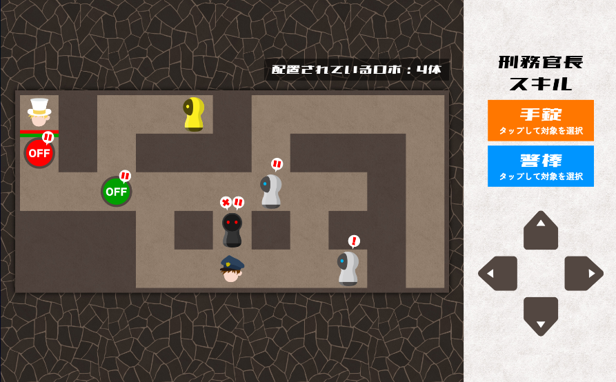
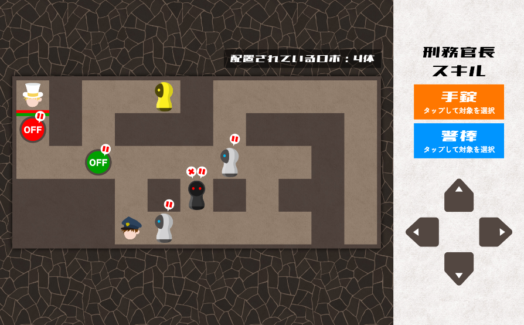
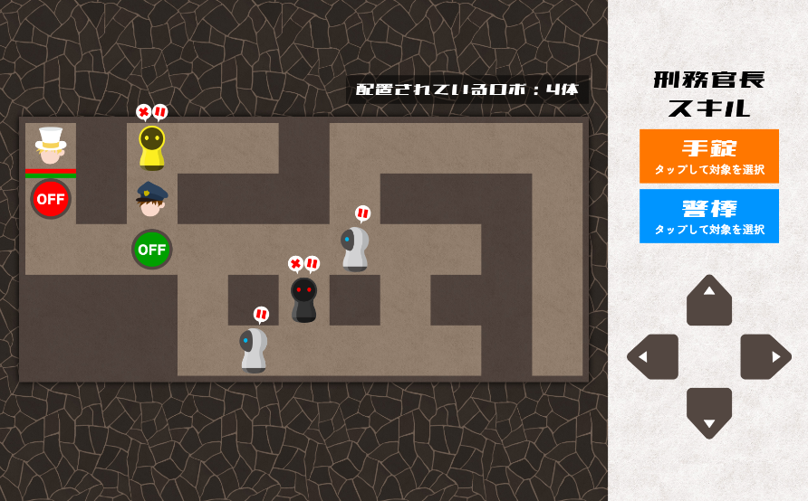
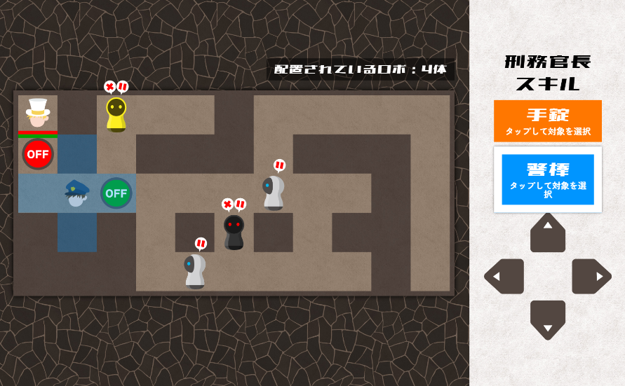

1周年記念公演
チームメンバー全員の合意を得てから読み進めましょう。
1周年記念公演 ヒント
ヒントが表示されない場合は右上リロードボタンを押してください
まずはスクリーンに表示されている謎を解きましょう。
身近にあるもので【】が使われているものを見ていないでしょうか。
【】には、チームパスの裏にあるハンドアウトの【解放者】が当てはまります。
「刀（かたな）」と「日（にち）」がそれぞれ当てはまるので、答えはいちななに（172）です。
セリフの一部が数字になっています。下の文章は「あなたの名前は？」になりそうです。
数字の向きにも着目し、当てはめましょう。③=「ハ」になります。
答えはシロハタです。
それぞれ、ねぐせ、ヘッドフォンを指しているようです。
ヘッドフォンを直すのは「メカニック」です。
ねぐせを直すのは「クシ」で、答えはメカクシです。
時間を5分進めて、反対にするという指示のようです。
例示のイラストは「OIL」です。
???=LIOとなり、答えはLION（ライオン）です。
7色の絵具を混ぜるという指示のようです。
少し混ぜると、虹色（レインボー）になります。
よく混ぜるとブラックになり、答えはボンクラです。
赤い四角には、「シ」が入ります。
左から、シロハタ・ライオン・ボンクラ・メカクシを当てはめ、答えはハイボクです。
タブレットにハイボクと入れましょう。
アレックスとサムの行動パターンを把握しましょう。
何をどのくらい注文したら2人の行動がどのように変わるのかに着目してみましょう。
アイスクリームが戸棚に入っています。この戸棚はカウンターにある鍵で開けることができそうです。
よってアイスを注文することで鍵を動かすことができます。しかし、そのままではサムが鍵を持ったままなので、サムが鍵を置く行動パターンを探りましょう。
どうにかしてこの鍵を手放すよう仕向けられないでしょうか。
おいしい水を2つ以上注文することで、両手で水を受け取りに行きます。この時に鍵をテーブルに置くようです。
次に、テーブルに置かれた鍵をどうしたらボスの牢屋まで届けることができるか考えてみましょう。
フィンガーチキンを注文することで、アレックスが食べたことに怒るようです。
その際に机をたたき、上に乗っているものが少し動きます。これを利用しましょう。
しかし、いまのままでは、机を叩く力が弱いため、鍵を動かすことはできません。
どうしたら机を叩く力が強まるか考えてみましょう。
ブルドッグを注文することで、アレックスが酔っぱらうようです。
その状態でフィンガーチキンを注文し、机を強く叩かせることで、鍵が飛び、ボスのもとまで届きます。
箱を溶かすために、エンジョウ、テクトコル、マイリール、コトバックを生成する必要があります。
それぞれ素材を組みあわせて謎を作り、キーワードを導きましょう。
26とは、アルファベットの数を表しているようです。
右のイラストは「kick」を表しています。
答えはpart(パート)です。
下のマスには「せんえん」が入るようです。上のマスには何が入るか考えてみましょう。
上のマスには「いちまい」が入り、答えはちえんです。
銃から天使までたどりましょう。/がある場合はその角度で曲がります。
胃のイラストはそのまま「い」と読み、答えはカウボーイです。
例示のミラーを成立させるために、一番下の点線を実線にし、あみだくじを辿りましょう。
答えはトライです。
さらにテントコウ、ハイパール、マトリック、コウジョウを生成する必要があります。
素材の組み合わせを変えて、謎を作り、キーワードを導きましょう。
右の問題文（「かぞえた〜」）が26文字あるようです。11文字目は「い」になります。
答えはめかくしです。
ジュウジカとカタカナを辿ると、矢印が現れます。その先を読むと「イ（胃）ケン（剣）＝意見」となります。
同じようにしてテンションを辿りましょう。
テンションを辿ると矢印になり、答えはかいきんです。
左のマスは50音表を表しているようです。
右のイラストはカガミです。
本来「カ」がある位置に「ミ」があるため、カガミのようです。答えはエガオです。
あみだくじが正しく成立するように、破線を1本実線にしましょう。
これにより成立したあみだくじを辿ることで、答えがわかります。
もう一つの黒矢印を辿ると、答えはカップです。
最後にエンソザイを生成する必要がありますが、しかし、組み合わせて「ソザイ」となる素材がありません、他に素材になるものはないでしょうか。
素材が入っていたファイルに「ソザイ」と書いてあります。ファイルを組み合わせることで謎を作りましょう。
内容物に書かれている説明文が26文字のようです。指示に書かれた文字数番目を読みましょう。
答えはカステラです。
まずは配置されているロボ4つの動きを止めることを目的としましょう。
「手錠」のスキルを使うことでロボの追跡を「停止」させることができます。
画像の位置まで移動し、一般警備ロボを「手錠」で捕まえましょう。

この時点で誰もボタンの上に乗っていないのに緑のボタンが踏まれていることから隠密警備ロボがここにいることがわかります。
画像の位置まで移動し、隠密警備ロボを「手錠」で捕まえましょう。

画像の位置まで移動し、2体目の一般警備ロボを「手錠」で捕まえましょう。

ボタン警備ロボをおびき出し、「手錠」で捕まえ、「警棒」でボタンを機能停止するスキルを消しましょう。

怪盗Ｎを救出するためには、赤と緑の2つのボタンを同時に押す必要がありますが、刑務官長1人では2つのボタンを同時に押すことはできそうにありません。
どうしたらボタンを2つ同時に押すことができるでしょうか。
隠密警備ロボが一度ボタンの上に乗ったときに、ボタンが押されたことからも、ロボもボタンの上に乗れば、ボタンが押されるようです。
よって、ボタンを同時に押すにはロボにボタンの上に立ってもらう必要がありそうです。
ロボが追跡をするときに刑務官長についてくるのを利用してボタンの位置まで誘導することができそうです。
しかし、ロボは刑務官長の「手錠」のスキルによって動きが止められているため、動いてはくれません。
どうにかしてロボの動きを復活させることはできないでしょうか。
刑務官長のスキル「警棒」は1マス以内の誰にでも使用できるようです。
どうしたら「手錠」のスキルで動きが止まっているロボの動きを復活させることができるでしょうか。
画像の位置で刑務官長自身のスキル「手錠」を消すことで、ロボに適用していた「手錠」のスキルの効果が消えます。
刑務官長が赤いボタンを押すのと同時に、刑務官長を追跡してきた一般警備ロボが緑のボタンを押し、怪盗Nを救出できます。

金色のものを色々盗み、何がどう動くのか、それぞれの動きを確認しましょう。
例えば、鳥かごを盗んだ場合、中にいる鳥は盗まれず、飛んでいくようです。
ろうそくの火がロープに燃え移れば、金色のペンキが上から落ちてきて、鍵を金色にすることができそうです。
ロープに火をつける方法を考えましょう。
まずはうさぎを盗むことで、シーソーの片側を軽くすることができそうです。
うさぎを消しても、シーソーを傾けるためには重さが足りません。
反対側に何かを乗せることはできないでしょうか。
鳥かごを消すと、鳥は「麦が落ちているところ」へ飛んでいきます。
麦がシーソーの左側に落ちていれば、鳥が止まってくれそうです。
麦の下の金色の台を消し、麦が下に落ちた状態で、鳥かごを消してみましょう。
うさぎが消えていれば、シーソーが傾くはずです。
シーソーが傾き火が付きましたが、肝心のカギが階下に落ちてしまいました。
この状況から、鍵を使わずにアリスを牢屋から出す方法を考えましょう。
金色になった床を消すことで、アリスを階下に落とすことができます。
例示のイラストは「いも」と「はくい」です。
これらの文字は、全て問題文に含まれています。
まずはこの謎全体が、どのような謎かを考えましょう。
この謎は、問題文の数字番目の文字を拾う、という謎のようです。
2,7文字目が「いも」、5,6,2文字目が「はくい」になるように、問題文の文字を消しましょう。
7文字目の「だ」を消すことで、例示が成立します。
この状態で10,1,3文字目を拾って読むことで、答えは「スカート」です。
まずは生き物の名前が拾えそうなルートを探してみましょう。
拾えそうな生き物は、「めじろ」か「あるまじろ」だとわかります。
「めじろ」が拾えるルートは「たか」から「かかし」までですが、どのように赤字を消してもこの問題文は作れません。
「あるまじろ」のルートを検証しましょう。
問題文を「たからかかしまで」と変えましょう。
答えは「あるまじろ」です。
どうやらこの謎は、文字を変換するような謎ではなさそうです。
矢印の向きに注目しましょう。
上向きの矢印を「じょう」、下向きの矢印を「げ」と読むことで、一つ目は「かんげい」のように言葉になりそうです。
全ての例が成立するように、赤字を消していきましょう。
右から、下の「ん」、下の「と」、下の「す」、上の「き」を消すことで例示が成立します。
答えは「げんじょう」です。
上のイラストは「FOX」を表しています。
数字を「FOUR」「TWO」「SIX」のように英語に変換し、どのような謎かを考えましょう。
数字のうち、濃い部分のみを読む謎だと考えると、「2」を消すことで上の例示は「FO X」となり成立します。
同様に、下側が言葉になるように文字を消しましょう。
下側の4を消すと、「T」「REE」のみが残り答えは「ツリー」となります。
消せる文字も含めて、選択肢を考えてみましょう。
「やじるし」「しるし」「いん」
「ふうしゃ」「かざぐるま」
「きんか」「きん」「かね」
「とけい」「とき」
「ますい」「あさ」
が、それぞれの熟語のパターンです。
最初は「とき」→「きんか」→……
とつながります。
計、矢の2文字を消すことで、
「とき」→「きんか」→「かざぐるま」→「ますい」→「いん」
とつなぐことができます。
答えは「かざぐるま」です。
2色の箱は、それぞれ別の法則で文字を変換しています。
まずは黄色から考えましょう。
一番上の「ウマ」は、消す必要はありません。
黄色の箱は、「十二支で一つ進める」という法則です。
続いて、青の箱の法則も考えましょう。
三段目の「そと」は、消す必要はありません。
青の箱は、「五十音順で一文字進める」という法則です。
これら二つの法則を組み合わせると、最後の「てら」は
「てら」→「とり」→「いぬ」
と変換されます。
よって答えは「いぬ」です。
最後の1本のビンは、早すぎて正攻法で打ち抜くことはできなさそうです。
何か別の方法を考えてみましょう。
カウンターに「0」と表示させることができれば、マスターは解放されるようです。
「0」の表記は非常に特徴的で、銃の弾痕も黒い丸のようです。
本数カウンターに銃を撃ち、弾痕で0を作りましょう。
まずは見えている「e」を手がかりに、埋められそうな色を考えましょう。
横の5文字には、「green」が埋まります。
「green」「blue」「red」と埋めることで、答えは「bed」となりそうです。
くだものがこの3色になるように、色を入れ替えていきましょう。
「はさみ」と「レモン」の色を入れ替えることで、謎を成立させることができます。
答えは「bed」です。
例の矢印の先は「リング」を表しています。
矢印が通る3文字が「リング」になるような言葉を考えてみましょう。
「英」「和」と書かれていることから、下には「グリーン」、上には「みどり」が当てはまりそうだと考えられます。
この謎が成立するように、ドーナツの色を変えていきましょう。
「ライム」と「ドーナツ」の色を入れ替えることで、ドーナツが緑色になり謎が成立します。
答えは「ドリーム」です。
例のイラストは「おまわりさん」です。
おまわり、つまり「お」の周りを読んでみましょう。
「お」の周りを読むと「どあのぶ」となります。
鏡を通して「どあのぶ」が見える状態を作ることができれば、謎が成立しそうです。
「窓」と「鏡」の色を入れ替え、鏡を透明にすることで向こう側のドアノブが透ける状態を作りましょう。
答えは、ひの周りを読んで「かんさつ」です。
この図は、「五十音表の右上部分」を示しています。
横に伸びた矢印と縦に伸びた矢印が色の名前を表すことから、法則を考えましょう。
縦に伸びた矢印は、真ん中に3つの点が入っています。
この点の数だけ間の文字を飛ばして読む、というギミックだと考えると、縦の矢印は「あお」、横の矢印は「あか」を表すと推測できます。
きるものの色が「あお」と「あか」になるように、色を変えていきましょう。
きるものは、「ドレス」と「はさみ」があります。
マスターの能力を踏まえると、ドレスと色を交換できるのは名前に音階が二つ含まれているものです。
音階が二つ含まれていて「あか」か「あお」色のものはないでしょうか。
謎3を解く際に窓を銀色にしましたが、その前までは確かに窓に「そら」が見えていました。
「そら」は青色であり、音階が二つ含まれています。
「そら」と「ドレス」の色を交換するために、再び窓を透明に変えましょう。
「ドレス」を青色に変えたら、「はさみ」と「ドア」の色を入れ替えることで例示が成り立ちます。
この謎の答えは「あす」です。
謎ラストは真っ白で、何が書かれているかわかりません。
まずは謎ラストの内容を知るため、できることがないか考えてみましょう。
「謎ラスト」には音階が一つ含まれています。
例えば「レモン」などと色を入れ替えることで、謎ラストの背景の色を変え、白色の文字を読むことができるようになります。
謎ラストはどうやら、白色のものと黒色のものの名前から文字を取る謎のようです。
白色はもともとの「謎ラスト」の色なので変化させることができますが、黒色のものはありません。
どこかに黒色のものがないか、探してみましょう。
窓の外に小さく、黒い羽根のようなものを見つけることができますが、今のままでは全体像が見えません。
隠れている部分が見えるようにする方法はないでしょうか。
「ドア」の色を透明にしてみましょう。
真っ黒な「カラス」が見つかるはずです。
カラスを白色に、ドーナツを黒色にすることで、謎の例示が成り立ちます。
よって答えは「カラー」です。
「しゅとう」が「うし」に、「ぎゃく」が「くぎ」になっています。
矢印の法則を考えましょう。
「最後の文字と最初の文字を読む」という法則になっています。
答えは「ごじ」です。
「せ434」が「せいかい」とあるので、「4=い」「3=か」と考えられます。
書かれたイラストから、数字と文字を対応させる法則を考えましょう。
数字は、イラストをひらがなにしたときに現れる文字の数を表していました。
1つしか現れない文字は「さ」、2つ現れる文字は「み」なので、3文字の答えは「はさみ」となります。
3つのイラストは「タバスコ」「バター」「かかと」です。
これらから同じ文字を消すと、「スコート」が残ります。
頭に「エ」をつけ、答えは「エスコート」です。
まずは一番下の式を考えましょう。
「ゴ=5」、「シ=4」という情報から、この式は「8×5=40」、または「9×5=45」の2択だとわかります。
後者の場合、右辺の下一桁が「ゴ」である必要があるため、この式は「8×5=40」です。
このように、いくつかのパターンを試しながら当てはまる数字を探していきましょう。
続いて、一番上の式に注目します。
5と足して二桁になる組み合わせは、「5+5=10」「5+6=11」「5+7=12」「5+8=13」「5+9=14」の5パターンです。
このうち、すでにわかっている4,8,0を含まず、かつ同じ桁が登場しない式は、「5+7=12」のみです。
このように、上の式が確定します。
上と下の式が確定した時点で、0と7に当てはまる文字がわかります。
答えは「トロロ」です。
※残った数字を検証すると、真ん中に当てはまる式は「9×4=36」だと確定します。
最初の部屋のうち、「タダノクウキ」は毒ではないので、通ることができそうです。
次の部屋のうち、「サクラノガス」の解毒薬である「スガノラクサ」は作ることができるとステップシートに書かれています。
まずは「スガノラクサ」を調合していきましょう。
イラストを含めて問題を読むと、「さいごのみみてせいかい導け」と読むことができます。
最後の文字だけ読んで、3文字の答えを導きましょう。
「タバスコ」「バター」「かかと」の最後の文字を読み、答えは「コート」です。
続いて、「キイロノミツ」「ミドリノミツ」「ピンクノミツ」のうち、解毒薬が調合できるものを探しましょう。
毒を「逆から読んだもの」が、解毒薬の名前になっています。
手元の素材を見ると、「キイロノミツ」の解毒薬「ツミノロイキ」が作れそうです。
今までの重ね方にとらわれず、二つの素材を重ねましょう。
「ツ ノ イ」と「ミ ロ キ」の二つを重ねることで、「ツミノロイキ」を作ることができます。
この謎を解いていきましょう。
＝はイコールではなく、「二」と読みます。
「手刀 ニモジ 逆 ニウメ 熟語 ニシロ」と読み、答えを導きましょう。
「手刀」という二文字を、「七〇〇」の「〇〇」の部分に逆向きに埋めましょう。
2文字の熟語が答えです。
答えは「切手」です。
4部屋目の3つの毒の解毒剤は、調合することができません。
調合することができないなら、何か別の手段で解毒薬を接種することはできないでしょうか。
「毒」かつ「解毒薬」であるような物質が存在します。
1部屋目にある「クドノクスリ」と、4部屋目にある「リスクノドク」は、毒でありながら互いが互いの解毒薬になっています。
「クドノクスリ」を吸ってから「リスクノドク」を吸った場合、お互いの効果が打ち消しあうため、毒は消え無事に隊長の元までたどり着くことができます。
「クドノクスリ」→「サクラノガス」→「キイロノミツ」→「リスクノドク」の順で通り、隊長の元へ向かいましょう。
まずは安全地帯の場所を見つけましょう。
MAPをよく見ることが重要です。
安全地帯は2箇所あります。どちらかに移動して決定を押しましょう。
画像の丸位置に移動して決定を押しましょう。
まずはお酒のマスに行き、お酒を拾いましょう。
その後、安全地帯に移動して決定を押しましょう。
画像の丸位置に移動して決定を押しましょう。
一見、安全地帯は無いように見えます。過去のドラゴンの攻撃から違和感を探しましょう。
2ターン目に安全地帯だった場所が2か所あるようです。違和感のある左の安全地帯の条件を確認しましょう。
画像の丸位置は、1ターン目の情報から周囲4マスに赤・緑のマスはありません。2ターン目の情報からこのマスは4色で囲われています。
画像の丸位置は、赤・緑・青・黄・黒以外の色が隠れていると推測できます。
お酒を拾った後にこのマスに移動して、決定を押しましょう。
画面上の赤四角をタップ拡大して、謎を表示し、破壊すべき場所を特定しましょう。
破壊すべき場所を5回タップすることではるにその情報が伝わり、はるが破壊してくれます。
タウンがダウンに変化しています。どのような法則が成り立っているか考えてみましょう。
タウンがダウンに、金が銀に変化していますので、1文字目が濁点に変化する法則があるようです。キューブの中から1文字目を濁点に変化させたとき、別の単語になる組み合わせを2つ見つけ出しましょう。
「さいほう」と「ざいほう」、「ヒール」と「ビール」がこの法則に当てはまります。
それぞれ、キューブを歪んだ四角に配置し、キューブを裏返して読みましょう。
丸数字の順にイラストを読むと「はきものはかいしろ」となります。画面上のはきもの（履き物）を5回タップして破壊しましょう。
2つのイラストを繋げて言葉にします。トラとベルが並んでトラベル、どこかにいくことになります。
同様にして言葉を作ることができる組み合わせを探しましょう。
2行目の一つには門（もん）が入ります。
3行目の一つには貝（かい）が入ります。
2行目にモンスター（門とスター）、3行目に解答（貝と塔）が当てはまります。スターと塔のキューブを裏返し、順にイラストを読むと答えはガムテープとなります。画面上のガムテープを5回タップして破壊しましょう。
円の中にはそれぞれ同じ性質のものが含まれています。どのような性質か考えてみましょう。
円左から音が出るもの、数字を含むもの、生き物、黒いものです。キューブからそれぞれ該当するものを探しましょう。
キューブは①にオルゴール、②にしろくま、③貝、④にカラスが入ります。
それぞれの文字数番目を読みましょう。
文字数番目を読むと、スマイルとなりますので、画面上の門番のスマイルを5回タップして破壊しましょう。
これまでの部屋で破壊したものが歪んだ四角には当てはまりそうです。
これまでの部屋で破壊したものがキューブにも含まれているようです。
それぞれ探してみましょう。
第一の部屋は履きものとしてヒール、第二の部屋はガムテープとしてテープ、第三の部屋はスマイルとして笑顔がキューブに含まれていました。残っていたキューブに含まれる生き物が破壊すべきものです。
誤ったものを破壊してしまうとリスタートしてしまうようです。つまり、カラスは最後の部屋で破壊すべきものではなかったようです。これまでの謎を振り返り、最後の部屋で破壊すべきものを考えましょう。
第一の部屋の謎で用いられている矢印が最後の部屋の謎にも用いられています。よって1文字目を濁点にする必要がありますので、破壊すべきものはカラスではなく、ガラスです。三日月が見える窓ガラスを破壊しましょう。
まずは捜索範囲を見ながら、「ディクショナリー」「クロスプレー」「レッドカード」「オオゾラ」の4つの謎を解きましょう。
扉の外に出る必要があるものも、いくつかあります。
青枠には「ブロンクス」と書かれています。
「ブロンクス」をドリンクメニューから探して、＆と/の間を読みましょう。
答えはスイートベルモットです。
黒色のスプレーを見ると、カラフルな〇が書かれています。
問題文の見えていない部分には白い円があると推測し、白い円と黒い円で囲まれた文字を読みましょう。
答えはパラダイスです。
レッドカードで「消える」文字が答え、と読むことができます。
消える文字だけ読みましょう。
答えははかいです。
オオゾラの絵画を見ると青枠があり、それを謎に当てはめると「カゼに23かけろ、その目線の先よめ」という指示になります。
「カゼ」を表で変換すると、65となります。
65×23を計算し、出てきた数字を再び文字にしましょう。
65×23=1495を再び表で変換すると、「フリーゼ」となります。
フリーゼという犬の、目線の先を見ましょう。
答えはヒカリです。
ララを救出したが、進捗メーターが99%のようです。
まだ、捕まっている人はいないでしょうか。
自分たちもアシナンが用意した偽公演「あなたと半分監獄だらけの町」で30分もすれば牢屋に閉じ込められてしまうという赤字を読んでいます。
「自分たち」を救出するための行動を考えましょう。
今までと同じように、「自分たち」を救出するための手がかりを手に入れましょう。
自分たちがいる物語は、「ACINANからの生還」です。
「からの生還」ボタンは画面上のものを使えば良さそうです。
残る「ACINAN」の部分のボタンが、どこかになかったでしょうか、
このボタンは、逆読みでも成立することが重要です。
入口の絵画の隣の「NANICA」ボタンを押しましょう。
その後「からの生還」ボタンを押すことで、自分たちを救うための手がかりが入手できます。
「脱出用鍵キット」を手に入れれば、ここから出ることができそうです。
先ほど余ったお金で、キットを購入しましょう。
この図はある「遊び」を表しています。
下の丸には「動作」が、上の丸には「役」の名前が入ります。
追いかけあう遊びを想像しましょう。
この図は、鬼ごっこを表していました。
「追う」「逃げる」が当てはまり、答えは「オニ」です。
箱を見ると、テープが貼られていることがわかります。
箱の図をよく見て、それぞれの方向から見たときにテープが作る数字を考えましょう。
3桁錠は「186」で開きます。
3桁錠を開けても、箱は開きません。
ほかに開けられる場所がないか探しましょう。
＋ドライバーと六角レンチで開けられそうなネジが存在しています。
それぞれの道具を手に入れましょう。
転がして、青線が下に来る時の文字を読みましょう。
右端に行ったときに落下することも考慮しよう。
落ちた先の「に」も通るので、答えはマカロニです。
イラストは「カラス」「プラグ」を表しています。
黒のマスのような部分は「プラス」を表していました。
ひらがなの部分を置き換えて読むことで、答えはプレスです。
箱を開けると、－ネジが出現しました。
ードライバーがあれば開けることができそうですが、ードライバーは高すぎて手に入りません。
何か別のもので開けることはできないでしょうか。
コインがあれば、－ネジを開けることができそうです。
コインを入手する方法を考えましょう。
クロスワードを購入することで、500円のおつりが発生し、コインが入手できそうです。
クロスワードを購入しましょう。
手に入れた500円を使って、ーネジを開けましょう。
これで鍵を開け、無事全員を救い出すことができました。
図は、ある「立方体の道具」の展開図を表しています。
これは「サイコロ」「ダイス」の展開図を表していました。
クロスワードを埋めたのち矢印の順に読み、答えはココロです。
隊長がアシナンにトドメを刺すことができますが、隊長の気合斬が溜め終わる3ターン目まで、アシナンの攻撃をかいくぐる必要があります。
特に、2ターン目にアシナンが放つヘルブレイクはダメージ1,000であり、この攻撃を受けてしまうとプレイヤー側のHPは0になってしまい、負けてしまいます。
どうにかしてこのヘルブレイクを防ぐ方法はないでしょうか。
アシナンが生成するシールドを奪うことができれば、このヘルブレイクの攻撃を無効化することができます。
このシールドを奪う方法を考えてみましょう。
このシールドが「金色のもの」であれば、怪盗Nが奪うことができます。
しかし、シールドは緑色であり、金色ではありません。
どうしたら良いか考えてみましょう。
マスターのスキルを使うことで、アイテムの色を入れ替えることができます。
シールドには音階が2つ含まれているので、スキルを適用できます。
マスターのスキルは含まれている音階の数が同一である必要があるので、音階を2つ含むアイテムをこれまでどこかで見ていないでしょうか。
（さらにヒントが必要な場合はヘルブレイクを防ぐ方法②を見ましょう。）
ララのスキルによって調達できるものの中におもちゃの金色のソードがあります。
これを手に入れることができれば、マスターのスキルで色を入れ替えることでシールドを怪盗Nが奪うことができます。
ソードを手に入れましょう。
ソードは50,000,000マネーであり、高額で購入することができません。
どうにかしてマネーを増やすことはできないでしょうか。
これまでマネーをどのようにして増やしてきたか、振り返って見ましょう。
エンヴィのスキルを用いてマネーをこれまで増やしてきました、現在持っているものを換金することで、マネーを増やすことはできないでしょうか。
謎を組み合わせて50,000,000マネー手に入るアイテムを探しましょう。
50,000,000マネーに換金できるのは「クロスワード」です。
どこかでクロスワードを手に入れてないでしょうか？
クロスワードのキーワードはブックマークです。これを入力することでソードを購入することができます。
（さらにヒントが必要な場合はヘルブレイクを防ぐ方法②を見ましょう。）
金色のソードでシールドの色を金色にして、奪う方法は分かりましたが、肝心のシールドが生成される条件を満たしていません。
アシナンはHPが50以下でないとシールドを生成しません。
どうにかしてアシナンにシールドを生成させることはできないでしょうか。
シールドはHP50以下のときに生成されます。
つまり、アシナンにダメージを与え、HP50以下にさせる必要があります。
どうしたらHP50以下にさせることができるでしょうか。
マーシーがダメージ100を与えることができます。
しかし、アシナンのスキル、悪魔の加護によりこのダメージは0になってしまいます。
他のキャラのスキルを使って、マーシーのダメージを改変できないでしょうか。
アリスとはるのスキルを使うことで、マーシーのダメージを50にすることができます。
これにより、アシナンのHPを50にまで下げ、シールドを生成させる条件を満たします。
①アリスとはるのスキルを使い、マーシーのダメージを50にする
②エンヴィのスキルでクロスワードを換金し、そのマネーでララからソードを得る
③ソードとシールドの色をマスターが入れ替え、シールドを金色にする
④金色になったシールドを怪盗Nが盗む
2ターン目まで耐える方法は導くことができたので、あとは隊長が気合斬をするだけですが、隊長は酔っていないとこの気合斬を失敗してしまいます。隊長をハイボールとジントニックで酔わせましょう。
ハイボールとジントニックを手にいれる必要があります。
彼らのスキルからこの2つのお酒を生成しましょう。